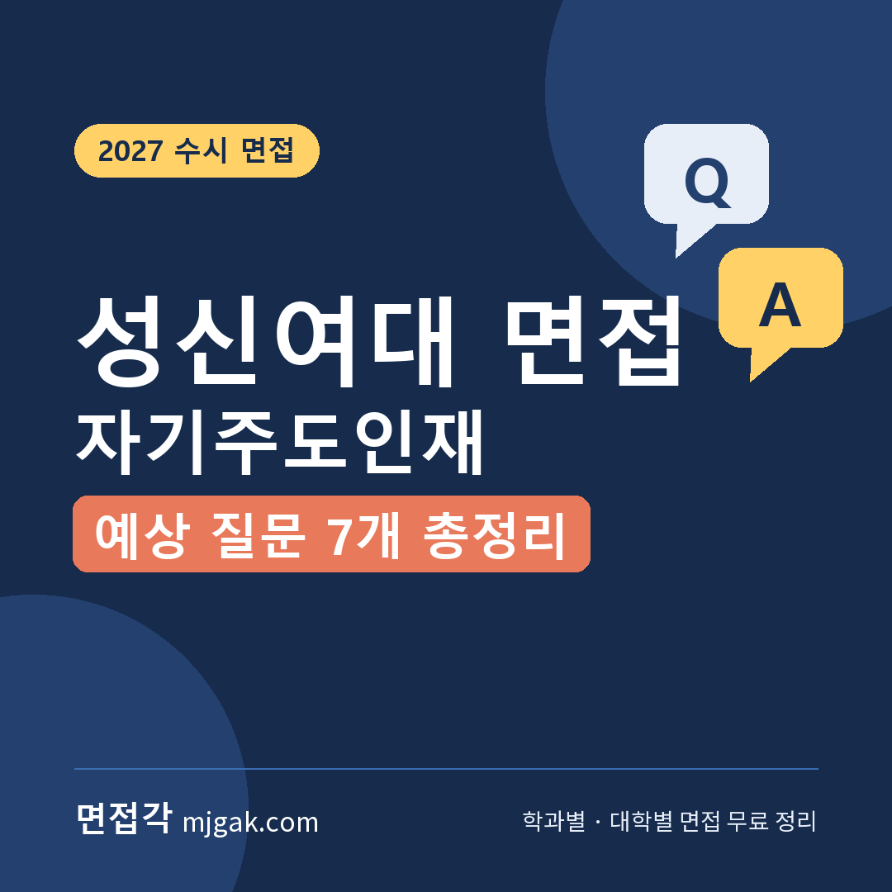
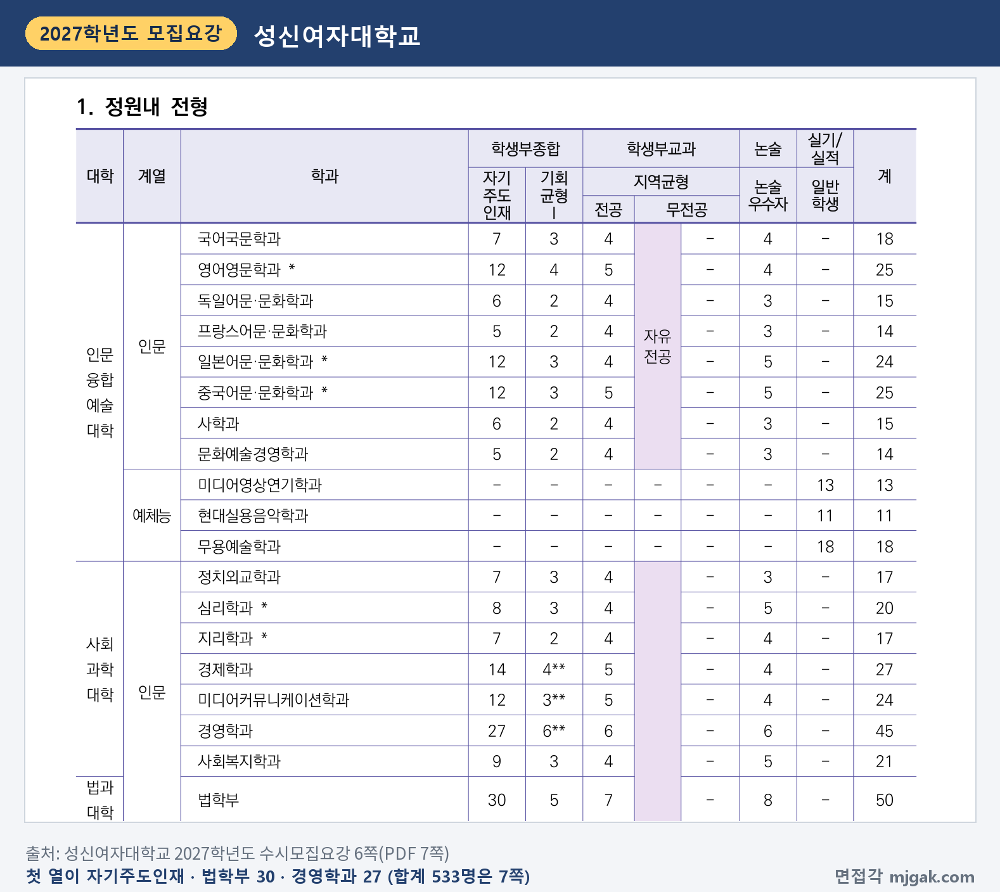
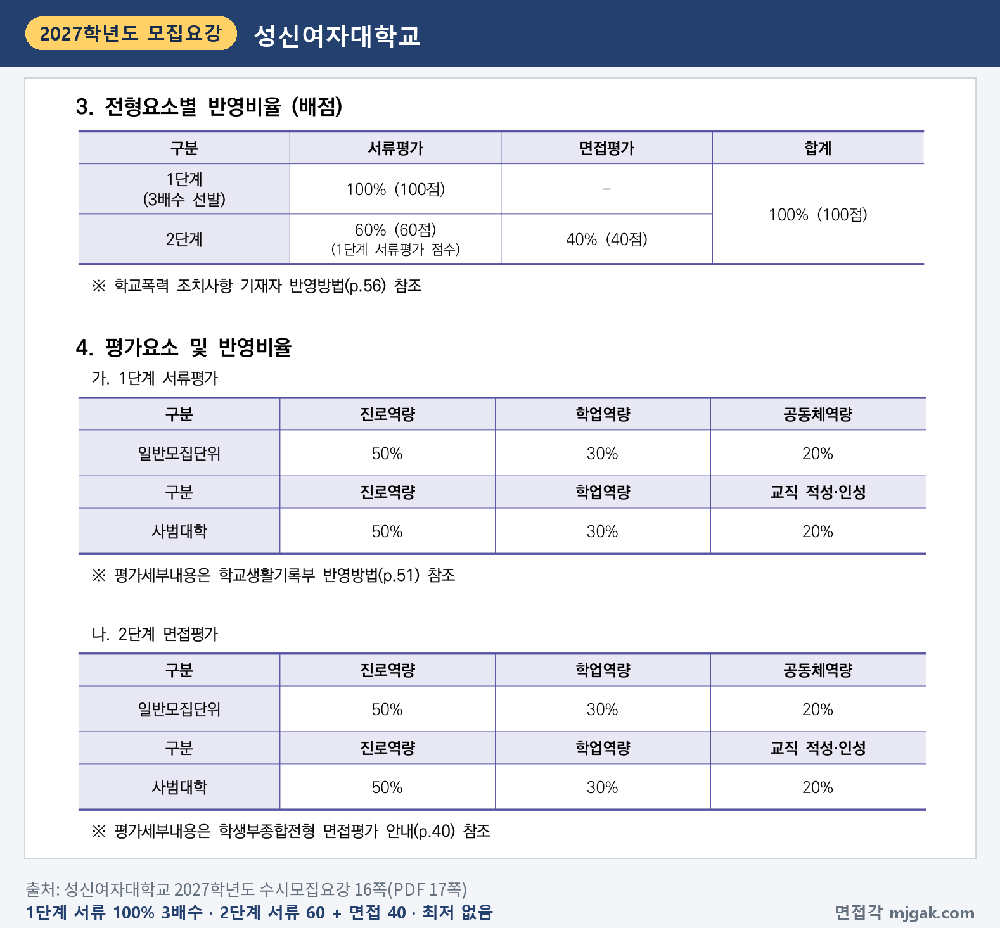
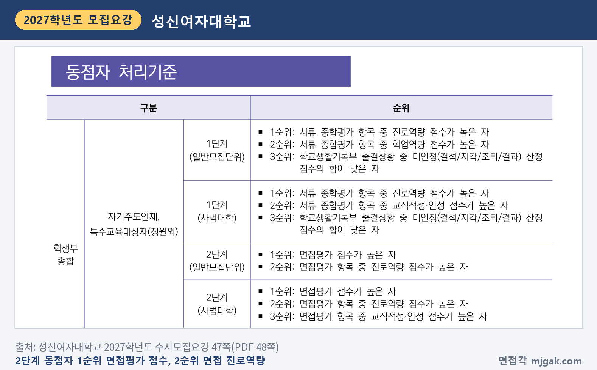
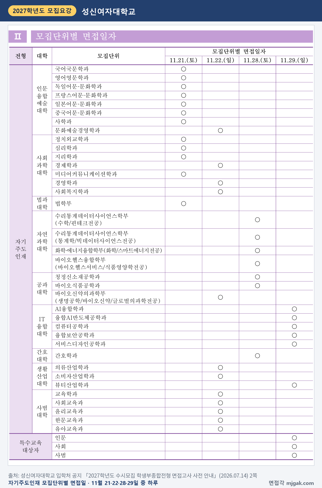
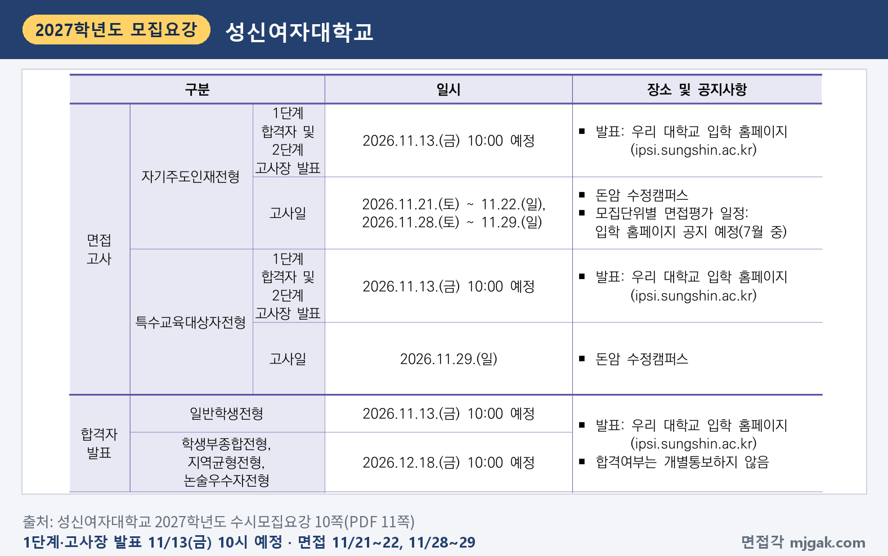
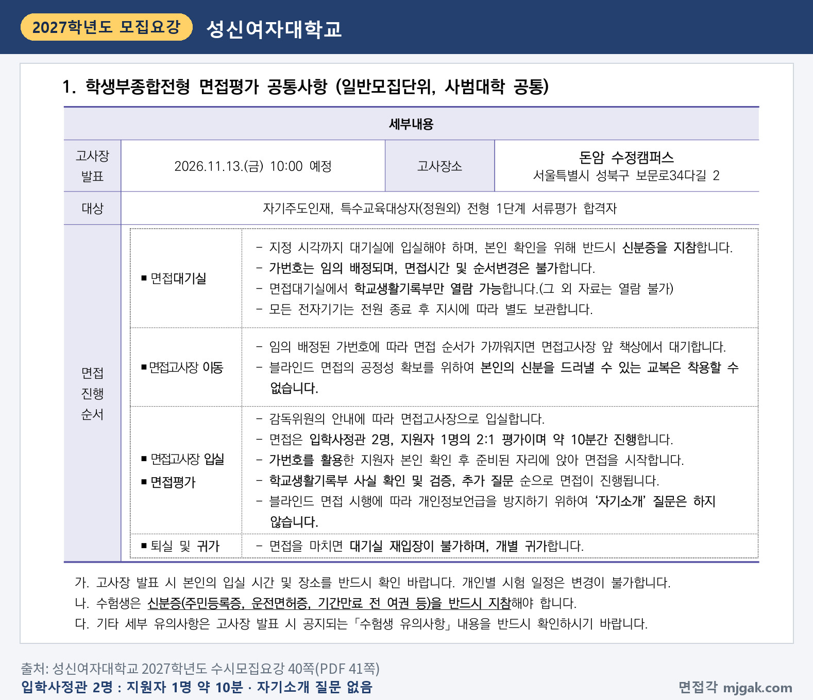
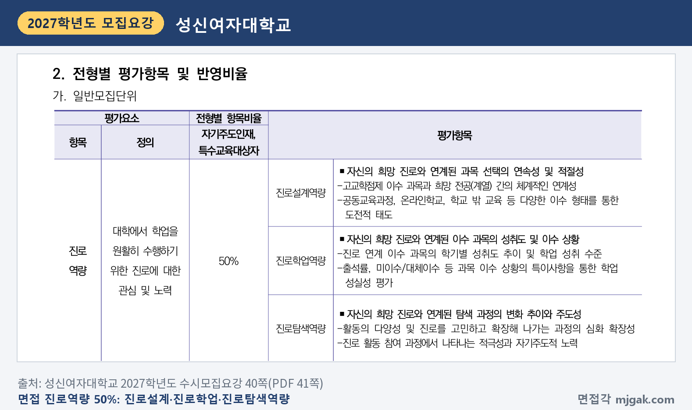
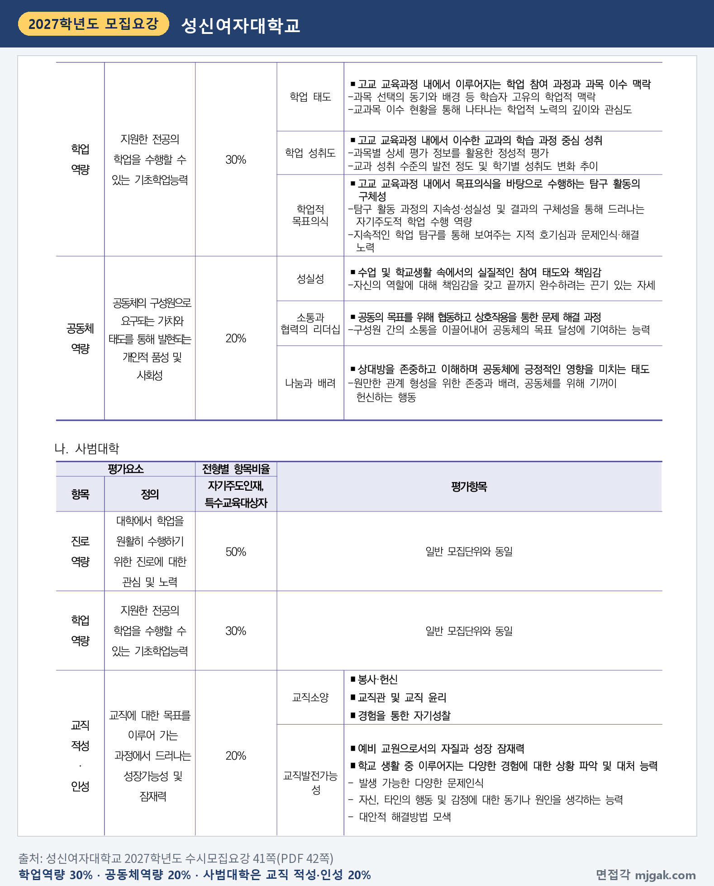
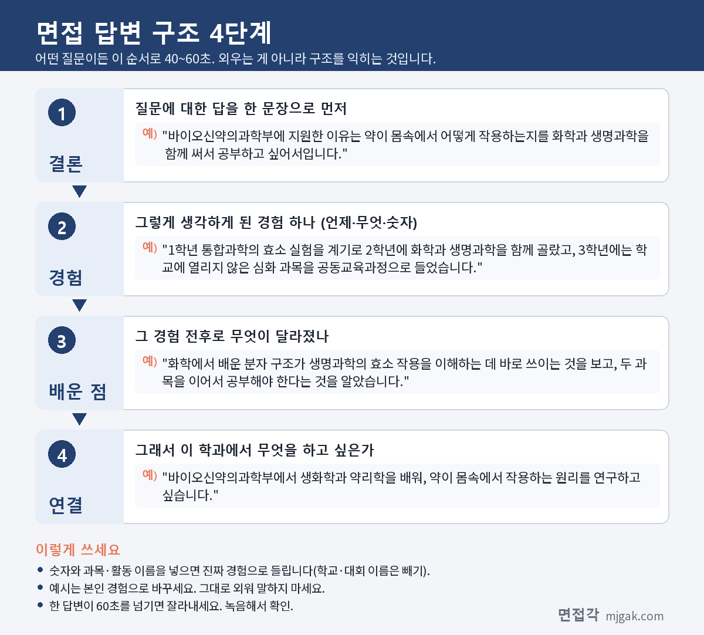

Ctrl+V (서식 유지됨)제목
본문 (이 영역 전체가 복사됩니다)
📷 여기에 이미지 넣기 — 썸네일 — thumb-ssw.png (대표 이미지로 지정)
성신여대 자기주도인재 면접에서는 '자기소개' 질문을 하지 않습니다. 모집요강은 블라인드 면접이라 개인정보 언급을 막기 위해 자기소개 질문을 하지 않고, 학교생활기록부 사실 확인 및 검증, 추가 질문 순서로 진행한다고 적었습니다. 외워 둔 자기소개보다 내 학생부의 활동을 설명하는 연습이 먼저입니다. 1단계 합격자와 면접 고사장 발표는 수능 전인 11월 13일(금) 오전 10시 예정이고, 면접은 11월 21일(토)~22일(일), 28일(토)~29일(일) 중 모집단위별로 정해진 날에 봅니다. 2단계는 1단계 서류 점수 60%와 면접 40%를 합산하고, 2027학년도에는 면접 평가요소에 공동체역량이 새로 들어갔습니다. 이 글은 성신여자대학교 2027학년도 수시모집요강을 바탕으로 전형 방법과 일정, 면접 방식, 예상 질문 7개와 답변법, 준비 순서를 정리했습니다. 자기주도인재전형에 지원한 고3과 재수생이 읽으시면 됩니다.
1. 자기주도인재, 2027학년도는 어떻게 보나
자기주도인재는 학생부종합전형으로 533명을 뽑습니다(7쪽). 인원이 많은 곳은 간호학과와 법학부 각 30명, 경영학과·바이오신약의과학부·AI융합학과 각 27명, 바이오헬스융합학부 24명, 화학·에너지융합학부 22명입니다. 사범대학은 교육학과·사회교육과·윤리교육과·한문교육과 각 10명, 유아교육과 13명이고, 뷰티산업학과는 5명입니다(6~7쪽). 고교 유형 제한이 없어 검정고시 합격자와 국외고 출신도 지원할 수 있고, 수능최저학력기준은 없습니다(4쪽, 16쪽).
📷 여기에 이미지 넣기 — 캡처 1 — 성신여자대학교 2027학년도 수시모집요강 6쪽(PDF 7쪽): ssw-2027-units.png
전형 방법은 1단계에서 서류평가 100%로 모집단위별 모집인원의 3배수를 뽑고, 2단계에서 1단계 서류평가 점수 60%(60점)와 면접평가 40%(40점)를 합산합니다(16쪽). 서류평가 자료는 학교생활기록부(미보유자는 대체서식)입니다(17쪽). 모집요강에 나온 숫자가 아니라 모집인원에 3배수를 곱해 이 글에서 계산한 값으로, 1단계 합격 인원은 최대 법학부(30명) 90명, 뷰티산업학과(5명) 15명입니다. 3배수 이내라도 부적격자는 선발하지 않는다고 적혀 있습니다(17쪽).
평가요소 비율은 서류와 면접이 같습니다. 일반모집단위는 진로역량 50%, 학업역량 30%, 공동체역량 20%이고, 사범대학은 공동체역량 자리에 교직 적성·인성 20%가 들어갑니다(16쪽). 2026학년도 면접 평가요소는 학업역량과 진로역량 두 가지였는데, 2027학년도에 공동체역량이 추가됐습니다(4쪽).
📷 여기에 이미지 넣기 — 캡처 2 — 성신여자대학교 2027학년도 수시모집요강 16쪽(PDF 17쪽): ssw-2027-method.png
불합격 기준도 알아 두세요. 면접평가 결시자와 부정행위자는 불합격입니다(17쪽). 학교폭력 조치사항이 있으면 1~3호는 총점(100점 기준)에서 최고 20%~최저 5%를 감점하고, 4~9호는 불합격 처리합니다(56쪽). 2단계 동점자는 면접평가 점수, 면접평가 중 진로역량 점수 순으로 가립니다. 사범대학은 3순위로 면접 교직적성·인성 점수를 봅니다(47쪽).
📷 여기에 이미지 넣기 — 캡처 3 — 성신여자대학교 2027학년도 수시모집요강 47쪽(PDF 48쪽): ssw-2027-tie.png
2. 언제 보나: 수능 전에 1단계 발표
1단계 합격자와 2단계 면접 고사장은 11월 13일(금) 오전 10시에 입학 홈페이지에 발표할 예정이고(10쪽), 이때 본인의 입실 시간과 장소를 반드시 확인하라고 적혀 있습니다(40쪽). 전형료 80,000원에 2단계 전형료 20,000원이 들어 있고(58쪽), 1단계 불합격자에게는 20,000원을 돌려줍니다(17쪽). 1단계 합격 뒤 전형료를 따로 낸다는 안내는 없습니다.
면접일은 11월 21일(토)~22일(일), 11월 28일(토)~29일(일)이고 장소는 돈암 수정캠퍼스입니다. 모집요강에는 모집단위별 면접평가 일정을 "입학 홈페이지 공지 예정(7월 중)"이라고 적었고(10쪽), 성신여대 입학처는 2026년 7월 14일 공지 「2027학년도 수시모집 학생부종합전형 면접고사 사전 안내」에서 모집단위별 면접일을 발표했습니다. 모집단위마다 넷 중 하루입니다.
11월 21일(토): 국어국문학과, 영어영문학과, 독일어문·문화학과, 프랑스어문·문화학과, 일본어문·문화학과, 중국어문·문화학과, 사학과, 정치외교학과, 심리학과, 지리학과, 미디어커뮤니케이션학과, 법학부
11월 22일(일): 문화예술경영학과, 경제학과, 경영학과, 사회복지학과, 바이오신약의과학부, 의류산업학과, 소비자산업학과, 사범대학(교육학과, 사회교육과, 윤리교육과, 한문교육과, 유아교육과)
11월 28일(토): 수리통계데이터사이언스학부(수학/핀테크전공, 통계학/빅데이터사이언스전공), 화학·에너지융합학부, 바이오헬스융합학부, 청정신소재공학과, 바이오식품공학과, 간호학과
11월 29일(일): AI융합학과, 융합AI반도체공학과, 컴퓨터공학과, 융합보안공학과, 서비스디자인공학과, 뷰티산업학과
같은 공지에 따르면 면접은 오전 9시부터 시작하고, 개인별 면접대기실 입실 시각과 장소는 1단계 합격자 발표(11월 13일 오전 10시 예정) 때 조회할 수 있습니다. 가번호는 임의로 배정되고 면접 시간과 순서는 바꿀 수 없습니다. 모집요강에도 개인별 면접 일정은 조정하거나 바꿀 수 없다고 적혀 있습니다(10쪽).
📷 여기에 이미지 넣기 — 캡처 4-2 — 성신여자대학교 입학처 공지 「2027학년도 수시모집 학생부종합전형 면접고사 사전 안내」(2026.07.14) 2쪽: ssw-2027-unit-dates.png
성신여대는 캠퍼스가 돈암 수정캠퍼스와 미아 운정그린캠퍼스 두 곳이라 시험장소에 유의하라고 적었습니다(10쪽). 최초 합격자 발표는 12월 18일(금) 오전 10시 예정이고, 등록기간은 12월 21일(월)~23일(수)입니다(10쪽).
📷 여기에 이미지 넣기 — 캡처 4 — 성신여자대학교 2027학년도 수시모집요강 10쪽(PDF 11쪽): ssw-2027-schedule.png
3. 면접은 어떻게 보나
면접은 입학사정관 2명, 지원자 1명의 2:1 평가로 약 10분간 진행합니다. 순서는 학교생활기록부 사실 확인 및 검증, 그다음 추가 질문입니다(40쪽). 평가요소에 대한 평가와 "제출서류 관련 사실확인으로 구성"되고, 전공 관련 지식평가와 실기는 없습니다(17쪽).
대기실에는 지정 시각까지 입실하고 신분증을 반드시 지참합니다. 가번호는 임의 배정되고 면접 시간과 순서는 바꿀 수 없습니다. 대기실에서는 학교생활기록부만 열람할 수 있고, 전자기기는 전원을 끄고 보관합니다. 블라인드 면접이라 본인의 신분을 드러낼 수 있는 교복은 입을 수 없고, 면접을 마치면 대기실에 다시 들어갈 수 없습니다(40쪽).
📷 여기에 이미지 넣기 — 캡처 5 — 성신여자대학교 2027학년도 수시모집요강 40쪽(PDF 41쪽): ssw-2027-interview.png
평가항목은 세 영역입니다(일반모집단위, 40~41쪽).
- 진로역량 50%: 진로설계역량(희망 진로와 연계된 과목 선택의 연속성 및 적절성), 진로학업역량(진로 연계 이수 과목의 성취도와 이수 상황), 진로탐색역량(탐색 과정의 변화 추이와 주도성)
- 학업역량 30%: 학업 태도(과목 선택의 동기와 배경), 학업 성취도(학기별 성취도 변화 추이), 학업적 목표의식(탐구 활동의 지속성·구체성, 지적 호기심과 문제인식·해결 노력)
- 공동체역량 20%: 성실성, 소통과 협력의 리더십, 나눔과 배려
📷 여기에 이미지 넣기 — 캡처 6 — 성신여자대학교 2027학년도 수시모집요강 40쪽(PDF 41쪽): ssw-2027-eval-career.png
진로역량 세 항목은 모두 "자신의 희망 진로와 연계된"으로 시작합니다. 과목을 왜 그 순서로 골랐는지, 성적이 학기마다 어떻게 달라졌는지, 진로 고민이 어떻게 넓어졌는지를 내 학생부로 설명할 수 있어야 합니다.
📷 여기에 이미지 넣기 — 캡처 7 — 성신여자대학교 2027학년도 수시모집요강 41쪽(PDF 42쪽): ssw-2027-eval-community.png
서류평가도 학교생활기록부 전체를 종합·정성평가하고(50쪽), 평가항목과 정의가 면접과 같은 문장입니다(51쪽). 서류에서 본 것을 면접에서 다시 확인한다고 생각하세요.
4. 평가 기준에서 나올 예상 질문 7개와 답변법
성신여대는 모집요강에 면접 질문 예시를 공개하지 않았습니다. 아래 7개는 위 평가항목과 면접 진행 순서를 바탕으로 정리한 예상 질문입니다. "○○" 자리에는 내 학생부의 과목과 활동이 들어갑니다. 예시 답변은 모집단위를 바꿔 가며 쓴 가상의 예시이니 반드시 본인 경험으로 바꾸세요.
▶ 질문 1. 희망 진로와 관련해 과목을 어떤 순서로 골라 들었는지 말해 보세요. (진로역량: 진로설계역량)
왜 묻나: 진로설계역량의 "자신의 희망 진로와 연계된 과목 선택의 연속성 및 적절성"을 그대로 묻는 질문입니다. 학업 태도의 "과목 선택의 동기와 배경"도 함께 드러납니다.
답변 구조: 지원 이유 한 문장 → 과목을 고른 순서와 계기 → 과목이 이어진다는 것을 느낀 장면 → 학과에서 배울 과목과 연결.
답변 예시 (바이오신약의과학부):
"바이오신약의과학부에 지원한 이유는 약이 몸속에서 어떻게 작용하는지를 화학과 생명과학을 함께 써서 공부하고 싶어서입니다. 1학년 통합과학의 효소 실험을 계기로 2학년에 화학과 생명과학을 함께 골랐고, 3학년에는 학교에 열리지 않은 심화 과목을 공동교육과정으로 들었습니다. 화학에서 배운 분자 구조가 생명과학의 효소 작용을 이해하는 데 바로 쓰이는 것을 보고, 두 과목을 이어서 공부해야 한다는 것을 알았습니다. 바이오신약의과학부에서 생화학과 약리학을 배워, 약이 몸속에서 작용하는 원리를 연구하고 싶습니다."
주의: 과목 이름만 나열하지 마세요. "왜 그다음에 그 과목이었나"가 연속성입니다.
▶ 질문 2. 학생부에 적힌 ○○ 탐구에서 본인이 직접 한 부분은 무엇인가요? (학교생활기록부 사실 확인 및 검증)
왜 묻나: 면접은 "학교생활기록부 사실 확인 및 검증"으로 시작합니다. 모둠 탐구라면 내 역할과 탐구에 쓴 개념을 설명할 수 있어야 합니다.
답변 구조: 탐구 주제 한 문장 → 내가 맡은 일 → 막혔던 지점과 해결 → 결과 → 다시 한다면 바꿀 점.
답변 예시 (화학·에너지융합학부):
"모둠에서 과일로 전지를 만들어 전압을 비교하는 탐구를 했고, 저는 전극 재료를 정하고 측정을 맡았습니다. 처음에는 같은 레몬인데도 측정할 때마다 전압이 달랐습니다. 전극을 꽂는 깊이와 두 전극 사이의 거리가 매번 달랐다는 것을 알고, 자로 재서 같은 조건으로 다시 측정했습니다. 다시 한다면 과일의 산도도 함께 재서 전압과 어떤 관계가 있는지 확인해 보고 싶습니다."
주의: "저희 모둠은"으로 시작하면 내 역할이 흐려집니다. "저는 ○○을 맡았습니다"로 시작하세요.
▶ 질문 3. ○○ 과목 성적이 학기마다 달라졌는데, 그사이 무엇을 바꿨나요? (진로역량: 진로학업역량, 학업역량: 학업 성취도)
왜 묻나: 진로학업역량은 "진로 연계 이수 과목의 학기별 성취도 추이"를, 학업 성취도는 "교과 성취 수준의 발전 정도 및 학기별 성취도 변화 추이"를 봅니다.
답변 구조: 어느 과목, 어느 학기 → 원인을 찾은 방법 → 바꾼 공부 방식 → 지금도 이어 가는 습관.
답변 예시 (수리통계데이터사이언스학부 통계학/빅데이터사이언스전공):
"1학년 1학기 수학 성적이 기대보다 낮아서, 틀린 문제를 단원별로 모아 보니 계산 실수보다 문제를 끝까지 읽지 않아 조건을 놓친 경우가 더 많았습니다. 그래서 2학기부터는 문제의 조건에 밑줄을 긋고 풀이 옆에 어떤 조건을 썼는지 적는 습관을 들였습니다. 2학년 확률과 통계에서는 이 습관 덕분에 조건부확률 문제를 덜 틀렸습니다. 지금도 자료를 볼 때 어떤 조건에서 나온 숫자인지부터 확인합니다."
주의: 성적이 떨어진 학기를 숨기거나 남 탓을 하지 마세요. 원인 하나와 바꾼 방법 하나면 충분합니다.
📷 여기에 이미지 넣기 — 이미지 1 — 제미나이 생성: 가을 캠퍼스 벤치 옆에서 약 캡슐·플라스크·노트북·캠코더·로봇 장난감·청진기·저울·블록 소품을 두고 웃으며 설명하는 여학생(실사) / "제미나이 프롬프트 1"
▶ 질문 4. 처음 관심 있던 진로에서 지금의 지원 학과로 어떻게 이어졌나요? (진로역량: 진로탐색역량)
왜 묻나: 진로탐색역량의 "탐색 과정의 변화 추이와 주도성", "진로를 고민하고 확장해 나가는 과정"을 묻는 질문입니다. 정의가 '과정'이니 진로를 어떻게 넓혀 왔는지를 중심으로 답하세요.
답변 구조: 처음 관심 → 관심을 바꾸거나 넓힌 경험 → 그 뒤 스스로 찾아 한 활동 → 지금의 지원 이유.
답변 예시 (미디어커뮤니케이션학과):
"1학년 때는 방송 PD가 되고 싶어 방송부에서 학교 행사 영상을 만들었습니다. 그런데 같은 영상을 올려도 제목과 썸네일에 따라 조회 수가 크게 달라지는 것을 보고, 만드는 일보다 사람들이 무엇을 보고 클릭하는지가 더 궁금해졌습니다. 그래서 2학년 사회 탐구에서 친구들의 영상 선택 이유를 설문으로 조사했고, 진로를 미디어 수용자 연구로 넓혔습니다. 미디어커뮤니케이션학과에서 미디어 효과와 조사 방법을 배우고 싶습니다."
주의: 진로가 바뀌었다면 숨기지 말고, 바뀐 계기 하나를 분명히 말하세요.
▶ 질문 5. 그 탐구에서 생긴 궁금증을 그 뒤에 어떻게 이어 갔나요? (학업역량: 학업적 목표의식)
왜 묻나: 학업적 목표의식은 "탐구 활동 과정의 지속성·성실성 및 결과의 구체성"과 "지적 호기심과 문제인식·해결 노력"을 봅니다. 사실 확인 뒤 이어지는 추가 질문에서 물을 수 있는 부분입니다.
답변 구조: 첫 탐구에서 생긴 질문 하나 → 그 질문을 풀려고 한 다음 활동 → 새로 알게 된 것 → 아직 풀지 못한 것.
답변 예시 (AI융합학과):
"정보 수업에서 손글씨 숫자를 구분하는 간단한 모델을 따라 만들었는데, 제 글씨는 자주 틀리게 읽혔습니다. 학습한 글씨와 모양이 다르면 틀린다는 것을 알고, 다음 수행평가에서는 반 친구들 글씨를 학습 자료에 더해 다시 비교했습니다. 틀리는 경우가 줄었지만, 어떤 글씨를 얼마나 모아야 공정한지는 아직 답을 찾지 못해 AI융합학과에서 배우고 싶습니다."
주의: "책을 더 찾아봤습니다"로 끝내지 말고 무엇을 바꿔 다시 했는지 말하세요.
▶ 질문 6. 모둠 활동에서 의견이 맞지 않았을 때 어떻게 풀었나요? (공동체역량: 소통과 협력의 리더십)
왜 묻나: 2027학년도에 새로 들어간 공동체역량 가운데 "공동의 목표를 위해 협동하고 상호작용을 통한 문제 해결 과정"을 묻는 질문입니다. 정의가 '문제 해결 과정'이니 누가 옳았는지보다 어떻게 합의했는지를 말하세요.
답변 구조: 상황(무엇 때문에) → 내가 한 행동 → 결과 → 그 뒤로 바꾼 습관.
답변 예시 (간호학과):
"보건 동아리에서 손 씻기 캠페인을 준비할 때, 포스터를 붙이자는 친구들과 직접 시연하자는 친구들의 의견이 갈렸습니다. 저는 두 방법을 한 반씩 해 보고, 일주일 뒤 손 씻는 시간을 비교해 보자고 제안했습니다. 시연을 본 반이 더 오래 손을 씻어서, 포스터는 시연 내용을 다시 떠올리게 하는 용도로 함께 쓰기로 했습니다. 그 뒤로는 의견이 갈리면 작게 먼저 해 보고 정하자고 말합니다."
주의: 평가항목 이름에 '리더십'이 있지만 정의는 "구성원 간의 소통을 이끌어내어" 목표에 기여하는 능력입니다. 지시한 경험보다 의견을 모은 경험으로 답하세요.
▶ 질문 7. 맡은 역할을 끝까지 해내기 어려웠던 경험이 있나요? (공동체역량: 성실성)
왜 묻나: 성실성의 정의는 "자신의 역할에 대해 책임감을 갖고 끝까지 완수하려는 끈기 있는 자세"입니다.
답변 구조: 맡은 역할과 기간 → 그만두고 싶었던 순간 → 그때 바꾼 것 → 그 경험이 지원 학과와 이어지는 점.
답변 예시 (법학부):
"2학년 때 학급 회의 기록을 1년 동안 맡았습니다. 2학기에는 안건이 줄어 그만둘까 고민했습니다. 그래서 지난 회의에서 정한 규칙이 실제로 지켜졌는지를 함께 적기 시작했고, 지켜지지 않은 규칙은 다음 회의 안건으로 올렸습니다. 규칙은 정하는 것만큼 지켜지는지 확인하는 일이 중요하다는 것을 배웠고, 법학부에서 법이 실제로 어떻게 집행되는지 공부하고 싶습니다."
주의: 개근이나 활동 시간 같은 숫자보다, 힘들었던 순간과 그때 바꾼 것 하나로 답하세요.
5. 답변은 이 4단계로 만드세요
어떤 질문이든 결론 → 경험 → 배운 점 → 연결 순서로 40~60초 안에 말하면 됩니다. 면접이 약 10분이라 답이 길면 추가 질문을 받을 시간이 줄어듭니다. 아래 도식은 질문 1(과목을 고른 순서)을 4단계로 쪼갠 것입니다.
📷 여기에 이미지 넣기 — 도식 — structure-ssw.png
6. 사범대학은 공동체역량 대신 교직 적성·인성
교육학과, 사회교육과, 윤리교육과, 한문교육과, 유아교육과는 면접에서 공동체역량 대신 교직 적성·인성 20%를 봅니다(16쪽). 교직소양(봉사·헌신, 교직관 및 교직 윤리, 경험을 통한 자기성찰)과 교직발전가능성으로 나뉘고, 교직발전가능성에는 "자신, 타인의 행동 및 감정에 대한 동기나 원인을 생각하는 능력", "대안적 해결방법 모색"이 들어 있습니다(41쪽).
그래서 누군가를 도운 경험은 "도와줬다"에서 멈추지 말고, 상대가 왜 그렇게 행동했는지 생각한 장면과 방법을 바꿔 다시 시도한 장면까지 준비하세요. 예를 들어 "멘토링에서 동생이 문제를 안 풀고 장난만 쳤는데, 모르는 것을 들킬까 봐 그런다는 것을 알고 쉬운 문제부터 같이 풀며 칭찬하는 방식으로 바꿨다"처럼 원인과 대안을 함께 말하면 됩니다.
7. 1단계 발표 전부터 면접 당일까지 준비 순서
11월 12일(목)까지: 학생부를 처음부터 읽고, 학년별로 들은 과목을 진로와 연결해 한 줄로 적습니다(질문 1). 성적 변화가 큰 학기에 바꾼 것(질문 3), 탐구 활동 세 개의 "왜 시작했나, 내가 한 일, 막힌 점, 다음에 한 일"(질문 2·5)을 정리하고, 질문 4·6·7 초안도 만듭니다. 위 표에서 내 모집단위의 면접 날짜를 확인해 둡니다.
11월 13일(금) 오전 10시, 1단계·고사장 발표: 입학 홈페이지에서 합격 여부와 고사장, 입실 시간을 확인합니다.
11월 14일(토) ~ 15일(일): 1단계에 합격했다면 10분 모의 면접을 한 번 녹음합니다. 대기실에서는 학교생활기록부만 볼 수 있으니 학생부만 보고 답을 떠올리는 연습을 합니다.
11월 16일(월) ~ 19일(목) 수능: 면접 준비는 멈추고 수능에 집중합니다.
11월 20일(금): 21일 면접이라면 수능 뒤 준비할 날은 이날 하루, 22일 면접이라면 이날과 21일(토) 이틀뿐입니다. 녹음 한 번과 신분증 확인만 합니다.
11월 21일(토) ~ 27일(금): 28·29일 면접이라면 질문 2·5를 세특 두세 개로 연습하고, 세특 개념을 30초 안에 설명할 수 있는지 확인합니다. 10분 모의 면접을 두 번 녹음해 60초를 넘는 답, 이름·학교 이름 같은 개인정보가 나오는 답을 고칩니다.
면접 당일(11월 21·22일 또는 28·29일): 신분증을 챙기고 지정 시각까지 대기실에 입실합니다. 교복은 입을 수 없습니다. 전자기기는 전원을 끄고 지시에 따라 보관합니다(40쪽).
12월 18일(금) 오전 10시: 최초 합격자 발표(예정).
8. 성신여대 자기주도인재 면접 자주 묻는 것들
Q. 자기주도인재와 성신여대의 다른 전형에 같이 지원할 수 있나요?
A. 됩니다. 전형별로 1개 학과씩 최대 6회 지원할 수 있고, 같은 전형 안에서 두 학과에 지원할 수는 없습니다(57쪽). 기회균형Ⅰ전형은 서류 100%라 면접이 없습니다(5쪽).
Q. 면접 날짜나 시간을 바꿀 수 있나요?
A. 안 됩니다. "개인별 논술·실기·면접 일정은 조정·변경할 수 없습니다"라고 적혀 있고(10쪽), 가번호는 임의 배정되며 면접 시간과 순서도 바꿀 수 없습니다(40쪽).
Q. 전공 지식을 묻거나 문제를 푸나요?
A. 아닙니다. "전공 관련 지식평가와 실기는 시행하지 않습니다"라고 적혀 있습니다(17쪽). 다만 내 세특에 나온 개념은 설명할 수 있게 준비하세요.
Q. 면접 복장과 준비물은 어떻게 하나요?
A. 블라인드 면접의 공정성을 위해 본인의 신분을 드러낼 수 있는 교복은 착용할 수 없습니다. 신분증(주민등록증, 운전면허증, 기간 만료 전 여권 등)은 반드시 지참해야 합니다(40쪽). 모집요강의 복장 규정은 교복 한 가지이고, 그 밖의 유의사항은 고사장 발표 때 공지되는 「수험생 유의사항」에서 확인하세요.
Q. 수능 최저가 있나요?
A. 없습니다(16쪽). 대신 면접에 결시하면 불합격입니다(17쪽).
9. 면접 전날 체크리스트
□ 학년별로 들은 과목을 진로와 이어서 60초 안에 말할 수 있다
□ 성적이 크게 달라진 학기와 그때 바꾼 공부 방법을 말할 수 있다
□ 세특의 탐구 활동 세 개를 "내가 한 일, 막힌 점, 다음에 한 일"로 말할 수 있다
□ 세특에 나온 개념을 30초 안에 쉽게 설명할 수 있다
□ 답변에 이름·학교 이름 같은 개인정보가 나오지 않는지 녹음으로 확인했다
□ 입학 홈페이지에서 면접 날짜, 고사장, 입실 시간을 확인했다
□ 신분증을 챙겼고, 교복이 아닌 옷을 준비했다
10. 같은 시기에 면접 보는 대학
같이 지원했다면 이어서 보세요.
▷ 이화여대 미래인재 면접형 면접 총정리 (11/21·22)
▷ 한국외대 학생부종합(면접형) 면접 총정리 (11/21·22)
▷ 숙명여대 숙명인재 면접 총정리 (11/28·29)
자기주도인재 면접은 자기를 소개하는 자리가 아닙니다. 내 학생부에 적힌 과목과 활동을 내가 정말 고르고 해냈는지, 그 과정에서 진로를 어떻게 넓혀 왔는지 확인하는 자리입니다.
※ 이 글의 내용은 성신여자대학교 2027학년도 수시모집요강과 입학처 공지 「2027학년도 수시모집 학생부종합전형 면접고사 사전 안내」(2026년 7월 14일)에서 인용했습니다. 예상 질문은 모집요강의 평가 기준을 바탕으로 정리한 것이며 대학이 공개한 질문이 아닙니다. 고사장과 입실 시간은 1단계 발표 때 성신여대 입학 홈페이지에서 꼭 확인하세요.
성신여대를 포함한 76개 대학의 2027학년도 면접 정보와 71개 학과별 면접 질문·답변 예시, 대학이 공개한 실제 면접 기출을 무료로 정리한 사이트입니다. 회원가입 없이 바로 볼 수 있고, 질문을 무작위로 뽑아 60초 타이머로 연습하는 모의 면접도 있습니다.
태그 (#은 에디터가 자동으로 붙이므로 그대로 붙여 넣어도 됩니다)
넣을 이미지 목록 (docs/promo/img 폴더)










제미나이 프롬프트 1 — 가을 캠퍼스 벤치 옆에서 약 캡슐·플라스크·노트북·캠코더·로봇 장난감·청진기·저울·블록 소품을 두고 웃으며 설명하는 여학생(실사) (4:3) — 제미나이에 그대로 붙여 넣어 이미지를 만드세요